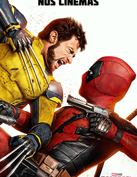

Voltar
Deadpool & Wolverine
Categoria:
Drama
Ano:
2023
4
(5 avaliações)
Do cineasta Yorgos Lanthimos e da produtora Emma Stone, vem o conto incrível e a evolução fantástica de Bella Baxter (Stone), uma jovem mulher trazida de volta à vida pelo brilhante e pouco ortodoxo cientista Dr. Godwin Baxter (Willem Dafoe). Sob a proteção de Baxter, Bella está ansiosa para aprender. Faminta pela mundanidade que lhe falta, Bella foge com Duncan Wedderburn (Mark Ruffalo), um advogado astuto e depravado, em uma aventura relâmpago pelos continentes. Livre dos preconceitos de sua época, Bella se torna firme em seu propósito de defender a igualdade e a libertação.